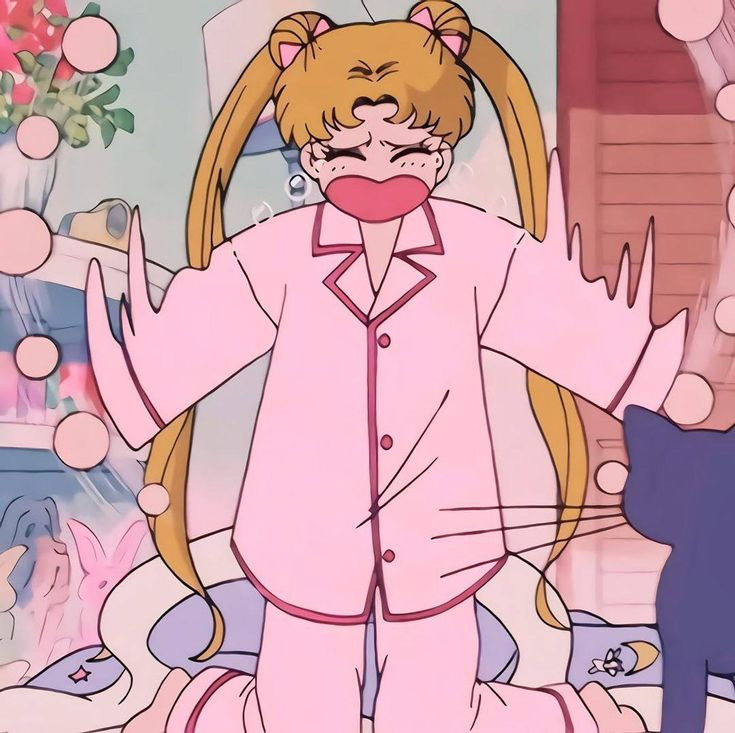
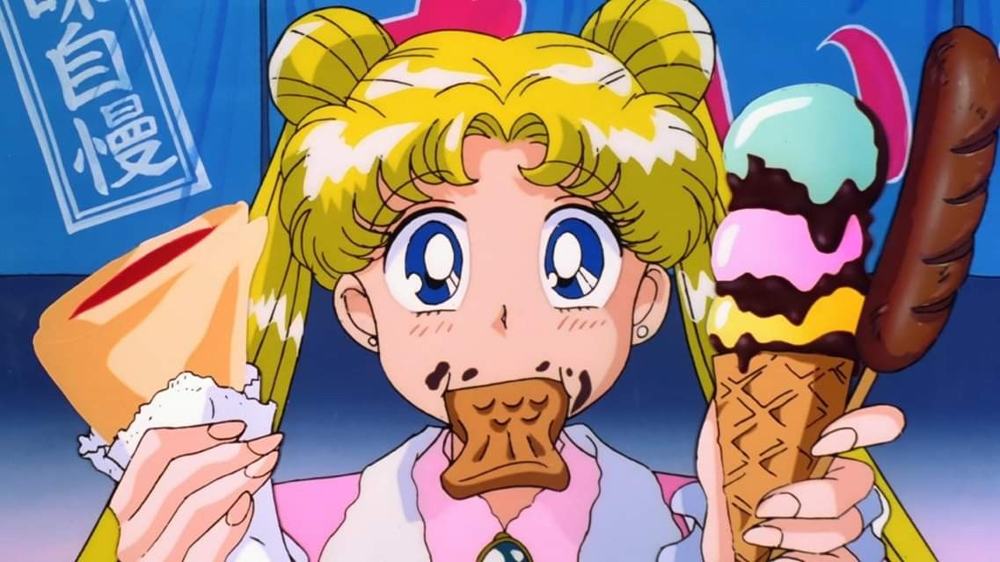
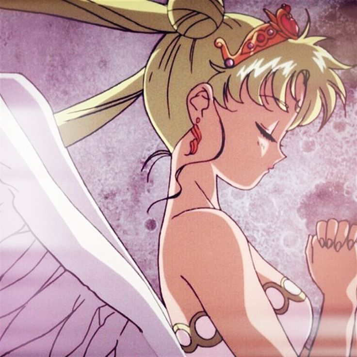

01 — ПЕРСОНАЖ
УСАГИ ЦУКИНО
SAILOR MOON
На первый взгляд Усаги — плакса, лентяйка, вечно опаздывающая в школу и думающая только о еде и парнях. Но именно в этом её революционность для жанра. В 90-е девочкам показывали идеальных героинь, а Усаги — живая, неловкая, эгоистичная, но при этом невероятно добрющая. Она доказывает, что быть героем можно, не переставая быть собой.
Usagi
Tsukino
« Если хочешь чего-то добиться,
надо действовать! Даже, если совсем нет надежды! »
02 — МОЁ МНЕНИЕ
МОЁ ВПЕЧАТЛЕНИЕ
Меня лично в Усаги восхищает и раздражает одно и то же: она эгоистична и альтруистична одновременно. Она может ныть, что хочет торт, а через минуту отдать последние силы, чтобы спасти незнакомца.

